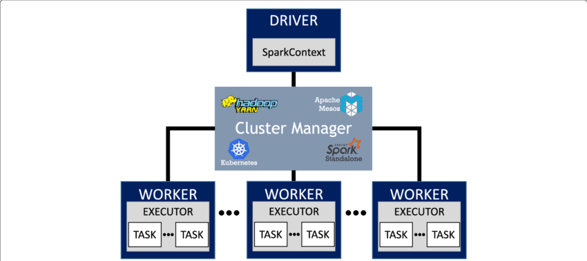
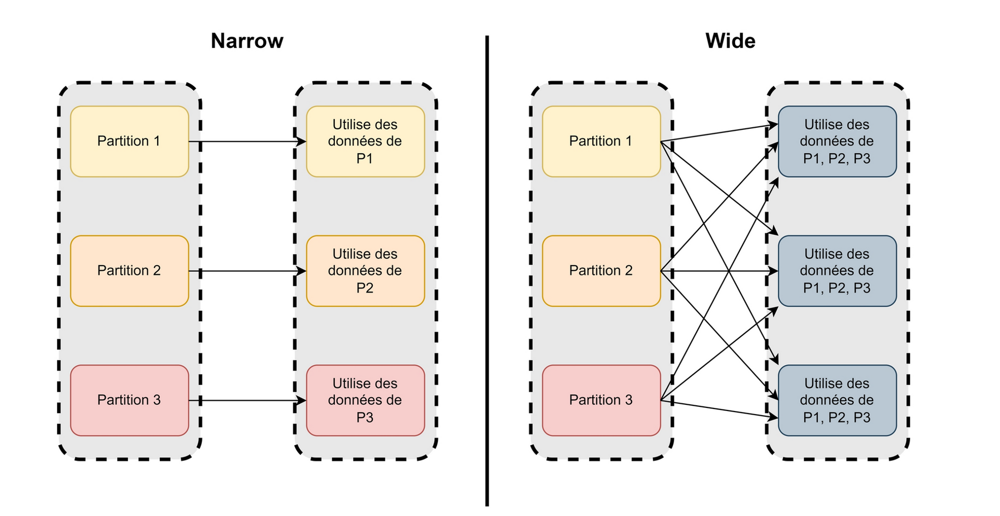
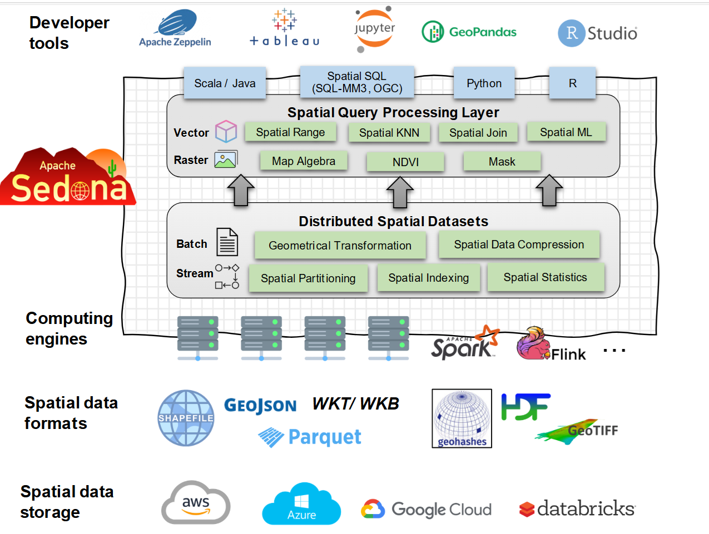

Equipe Datascience
Apache Spark est un outil open source de calcul distribué dédié au traitement et à l'analyse de données volumineuses. Spark est un projet open source administré par la Fondation Apache Spark.
Apache Spark est conçu pour remplacer le précédent outil de calcul distribué Hadoop. Par défaut, Spark réalise les traitements de données en mémoire, pas sur disque.
Spark est maintenant l'un des outils de Big Data les plus utilisés.Un application Spark contient un un programme pilote et des tâches de traitement de données sur un cluster.

Le réarrangement (shuffling) des données est la redistribution des données aux exécuteurs. C'est l'une des opérations les plus coûteuses, contrôler le réarrangement est au coeur des enjeux de performance.

Apache Sedona étend les fonctionnalités des outils de clustering, comme Apache Spark, Apache Flink, et Snowflake au traitement de données spatiales volumineuses . Il fournit des Spatial Dataset distribués et un moteur de requêtes SQL permettant de charger, de traiter et d'analyser efficacement des jeux de données spatiales distribués sur plusieurs machines.
Le CASD fournit un cluster Apache Spark pour Sedona.

Sedona ajoute des métadonnées et un index au standard RDD de Spark pour construire des Spatial RDD.
Sedona ajoute des métadonnées et un index au standard RDD de Spark pour construire des Spatial RDD.
Sedona ajoute des colonnes de type géométries et raster au standard DataFrame de Spark pour construire des Spatial Dataframe. Pour toutes les colonnes spatiales, il introduit des fonctions spatiales SQL (par exemple : ST_Contains, ST_Transform, etc.)
Sedona ajoute des colonnes de type géométries et raster au standard DataFrame de Spark pour construire des Spatial Dataframe. Pour toutes les colonnes spatiales, il introduit des fonctions spatiales SQL (par exemple : ST_Contains, ST_Transform, etc.)